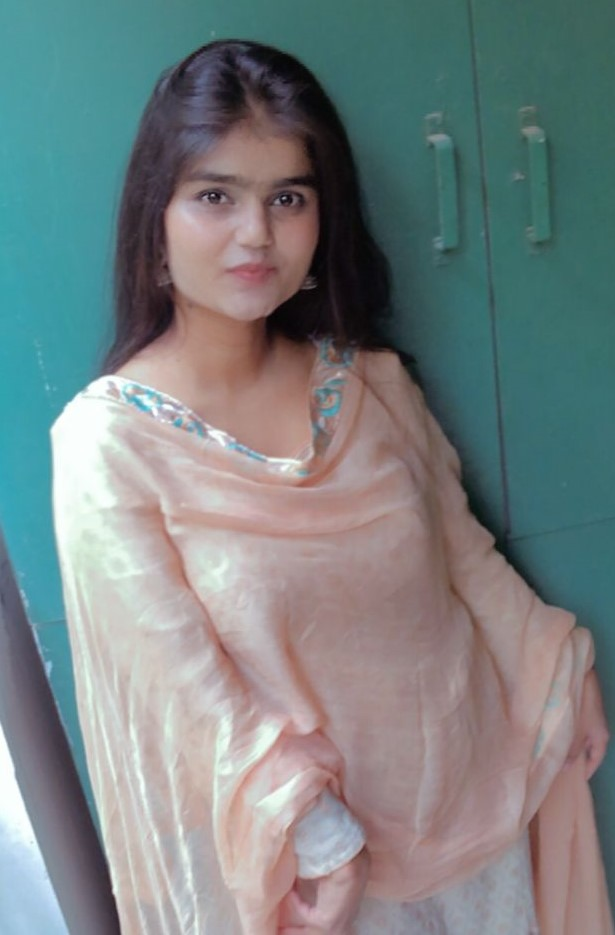

FIRDOUS KHAN
linkedin
Email Id-firdouskhan.aug@gmail.com
|

|
Project
Education
Jamia Millia Islamia
B.Tech- Mechanical Engineering; GPA: 9.76
Jamia Senior Secondary School Delhi
Percentage: 88.8%
Rajputana Public School
Percentage: 95%
Experience
Wipro Limited
Engineer Intern (Full-time) Feb 2022-April 2022
- Delivered 15+ Mini Projects based on Java, OOPs, SQL, Html ,CSS , JavaScript and Database.
- Contributed to an electronic voting system in designing and coding API for posting admin info, voting details, etc
National Engineering Olympiad
Campus Ambassador Oct 2021-Nov 2021
Created 20+ content postsforsocial media marketing and advertisement.
Council of Scientific and Industrial Research CSIR
Research Intern June 2021- July 2021
- Learned about Mechanical, Sustainable, and Consideration Designs.
- Applied Manufacturing Processes, DFMA(Design for Manufacturing Assembly), GDT(Geometry, Design, Tolerance).
- Implemented Quality Analysis, Pareto Rule, Kano Model, and SWOT Analysis.
Projects
Design of a Solar Powered Fertilizer Applicator for small farms (2021-2022)
- Design a system for fertilizer application that is eco-friendly, less time-consuming, less labor intensive,
and cost-effective system which will help smallholder farmersin the fertilizer application.
- Analyze and study the marketshare ofsmallholder farmers.
- Develop an optimized way for the fertilizer application.
- Design, analyze and simulate Electric Fertilizer Applicator using Solidworks and Ansys.
Formula Bharat-Electric Vehicle Competition (2020)
- Implemented a Business Plan to estimate the distribution of revenue, pay range for workers, gross
margin profit, and sales distribution.
QUAD Bike Design Challenge, Quad Bike designing competition (2019-2020)
- Design the Quad bike according to the prescribed specification with a team of 17 members.
- Fabricated the parts of a quad bike and design the outer part of it.
- Worked on a business plan for 40% of the profit.
SAE AWIM National Olympics, Toy designing challenges (2019)
- Taught 5 schoolstudents about the dynamics of the toy.
- Making the toy from the provided material as per the requirement
Skills Summary
- Languages:- Java, SQL, HTML,CSS,JavaScript DBMS.
- Soft Skills:- Problem-Solving, Event Management, Time Management.
- Tools:- Visual Studio,Autocad, Solid Works, Fusion 360
- Fluent in English, Hindi, and Urdu
- Google sites(Excel, PowerPoint, word)